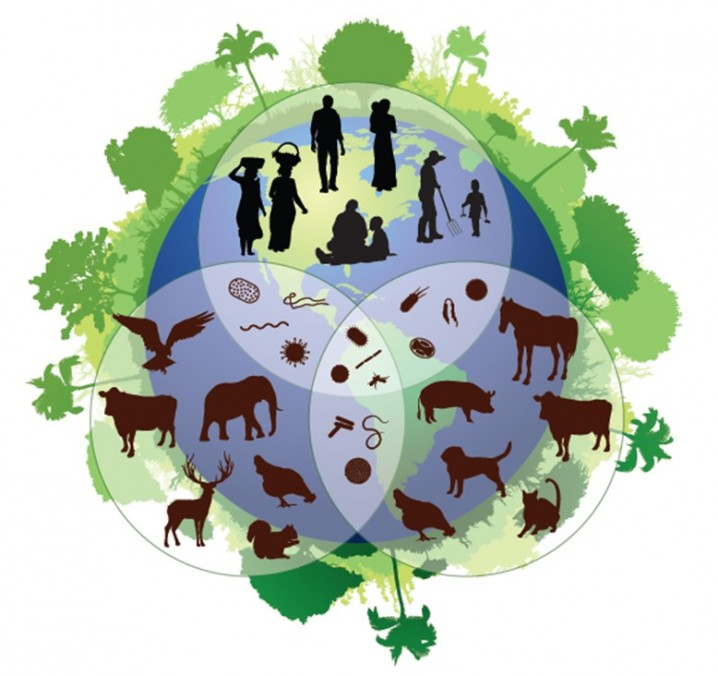
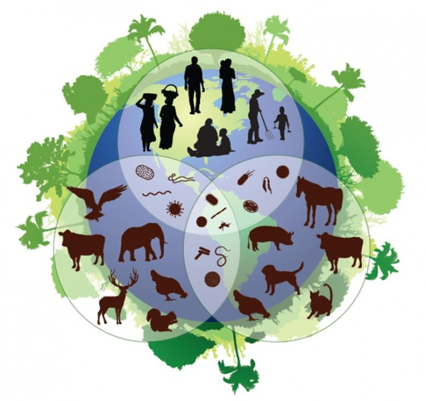

Prácticas para la conservación de la biodiversidad
Cada vez más se definen estrategias y políticas para la conservación de la biodiversidad las cuales están en constante revisión para garantizar su cumplimiento e implementación, así como establecer posibles mejoras y modificaciones.
La mayoría de las directrices para la protección de la diversidad biológica se basa en leyes y acuerdos internacionales que protegen ecosistemas o especies amenazadas y en peligro. Existen los catálogos de conservación, que clasifican las especies según el estado de amenaza en el que se encuentran, el estatus de conservación o de la tendencia poblacional. Ejemplos de ellos son los libros rojos o la lista de especies amenazadas.
A nivel internacional, por ejemplo, en 1992, tuvo lugar la celebración de la Cumbre de la Tierra en Rio de Janeiro, donde se estableció el Convenio de Naciones Unidas sobre la Diversidad Biológica (CDB). Este convenio entre en vigor al cabo de un año, y sus objetivos son tres:
- Conservación de la diversidad biológica.
- Uso sostenible de los componentes.
- Reparto equitativo y justo de los beneficios que se derivan del uso de los recursos genéticos.
Importancia de la conservación de la biodiversidad
Existen muchas razones para conservar la biodiversidad y, en los últimos años, la preocupación por su conservación ha crecido notablemente ya que, en la actualidad, el ritmo con el que se están extinguiendo especies en todo el planeta es el más rápido que ha habido nunca. De hecho, según constata un informe de la Unión Mundial para la Conservación de la Naturaleza (UICN), publicado en el 2000, el 12% de las plantas, el 11% de las aves y el 25% de los mamíferos han sido extinguidos en los últimos años o, bien, están en extremo peligro.
En conclusión, la biodiversidad tiene un papel fundamental para el desarrollo de la vida humana y del planeta. Por lo tanto, la conservación de la biodiversidad de vital importancia, así como su protección y el uso sostenible de los recursos y servicios que nos proporciona. Se requiere establecer un desarrollo junto con un modelo de economía verde, reduciendo el impacto del ser humano en los ecosistemas y dando relevancia al valor de la biodiversidad.
Cómo cuidar la biodiversidad
El cuidado de la diversidad biológica es una necesidad urgente. Llegados a este nivel, es extremadamente necesario acabar con la multitud de problemas que conlleva la degradación del plantea, incluyendo la contaminación, la explotación intensiva de los recursos, el pico de urbanización, etc. Por lo tanto ¿qué importancia tiene la educación ambiental para la conservación de la biodiversidad? La educación ambiental ejerce una enseñanza necesaria para asentar unas bases, ya que la educación no se limita a proporcionar información, sino que da la capacidad para un uso eficiente y responsable. Este primer paso es necesario para pasar de personas no sensibilizadas a personas informadas y sensibilizadas.
Aparte de concienciarse de la problemática para asentar las bases, otras de las acciones que podemos llevar a cabo para cuidar y conservar la biodiversidad son:
Reflexionar y ser conscientes de la importancia de la biodiversidad y los peligros a los que está expuesta, es una herramienta de especial vital para dar un primer paso a una solución resolutiva.
 
